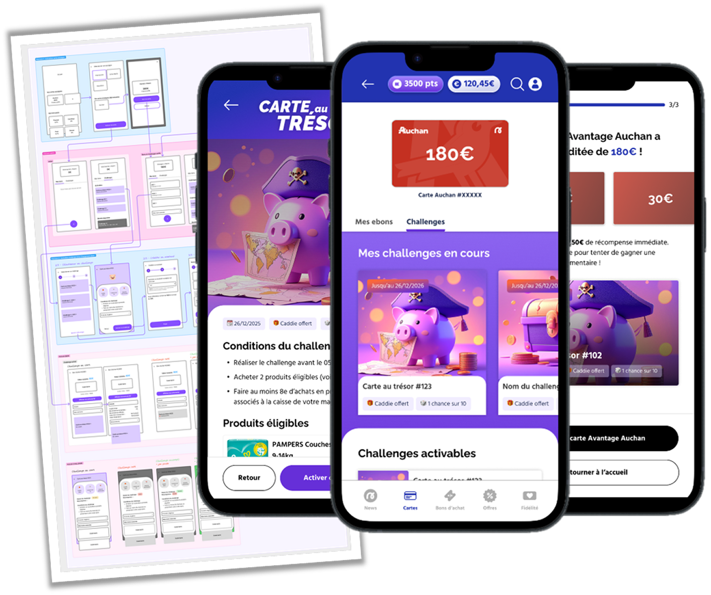
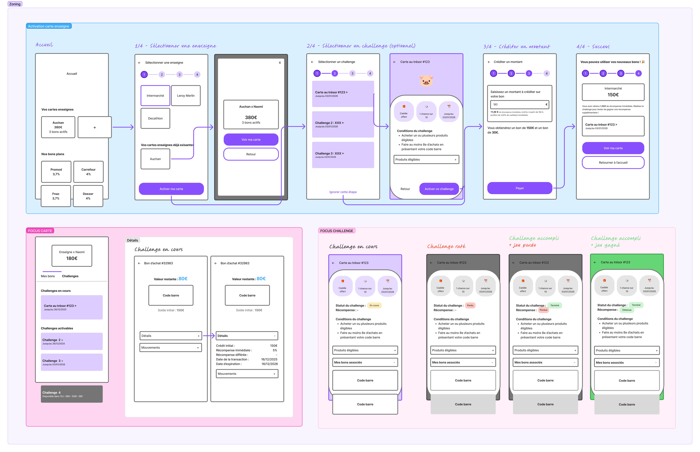
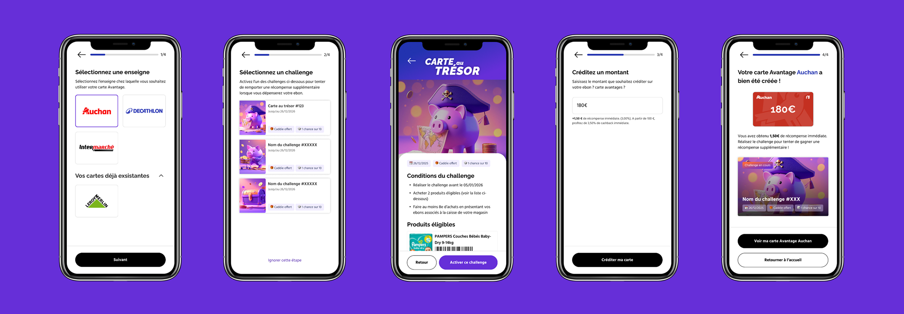
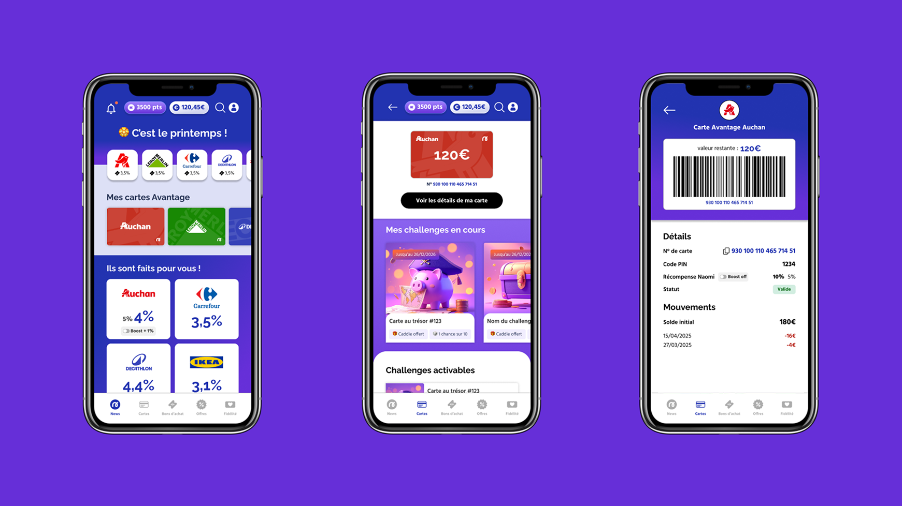

Naomi x Valiuz
Transformation du modèle transactionnel pour booster le retail media.
Période : Décembre 2025
Rôle : UX/UI Designer (Ateliers ; Flux utilisateurs ; Prototypes)
Parties prenantes : Produit, Tech, Data, Marketing
Naomi est une solution de fidélité et de connaissance client basée sur l’open-banking, qui permet à ses utilisateurices de gagner du cashback en récompensant automatiquement leurs dépenses dans une galaxie d’enseignes partenaires (Leroy Merlin, Decathlon, Auchan...).
- Problématique : L’utilisation de bons d’achat classiques créait une zone d'ombre sur la data transactionnelle, empêchant Naomi d'intégrer des annonceurs (Pampers, Coca-Cola...) dans son parcours.
- Objectif Stratégique : Remplacer les bons d'achat par des cartes de paiement in-app. En entrant dans le système de caisse, Naomi capte la donnée au SKU pour s'aligner sur les objectifs retail media de Valiuz.
- Contrainte MVP : Lancement d'une solution mono-enseigne et non-rechargeable dans un premier temps, conçue pour évoluer vers un modèle multi-enseigne et rechargeable à terme.
Atelier UX
Suite à un workshop transverse (Marketing, Data, Tech), deux axes d'optimisation ont été identifiés :
- Efficacité en caisse : Le time on task était pénalisé par la multiplication des codes-barres. Solution : Centraliser le paiement sur un code unique par enseigne.
- Rétention & Engagement : L’expérience était trop passive. Solution : Gamifier le parcours via des "Challenges" produits, incitant l'utilisateur à ouvrir l'application pour activer des récompenses ciblées.
User flows

Zoning

Prototypes
Parcours d'activation de la carte Avantage (ici : Auchan) :

Parcours d'accès à la carte Avantage une fois activée :

Pour valider cette transition, nous avons mené des tests utilisateurs comparatifs entre l'ancien système de bons et le nouveau système de carte in-app.
Réduction drastique du time on task
Le temps nécessaire pour accéder au moyen de paiement final a été réduit de 40%. En passant d'une liste de bons multiples à un code-barre unique par enseigne, l'utilisateur met désormais en moyenne moins de 5 secondes à dégainer son code-barre en caisse (contre 12 secondes auparavant).
Engagement accru
Lors des entretiens post-tests, 75% des utilisateurs ont déclaré qu'ils consulteraient l'application avant chaque session de courses pour vérifier les challenges produits.
Feedback utilisateur
"C'est beaucoup plus fluide, je n'ai plus peur de bloquer la file d'attente à la caisse en cherchant mon bon."